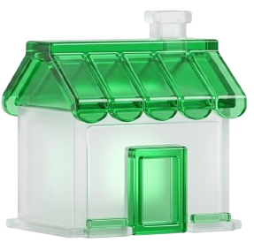
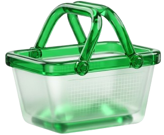

Para os Comércios
Evite o descarte de itens perfeitamente seguros. Recupere seus custos de insumos e atraia novos clientes da sua região.

Evite o descarte de itens perfeitamente seguros. Recupere seus custos de insumos e atraia novos clientes da sua região.

Compre caixas surpresa repletas de produtos deliciosos de padarias, hortifrútis e mercados com até 70% de economia.
Facilitamos o direcionamento e a doação do excedente não comercializado para ONGs que combatem a fome local.
A ReNutri funciona no modelo B2B2C conectando pequenos comércios (o primeiro B) à nossa plataforma digital (o 2), que por sua vez direciona os alimentos para duas pontas: os consumidores locais em busca de economia (o C) e as ONGs que combatem a fome (o outro B). Através desse ecossistema, transformamos o excedente que seria descartado em mercados e padarias em caixas surpresa acessíveis, garantindo uma solução sustentável onde o comércio recupera custos, o cliente economiza até 70% e a comunidade é apoiada automaticamente.